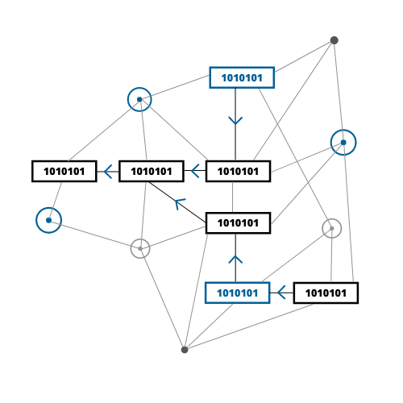
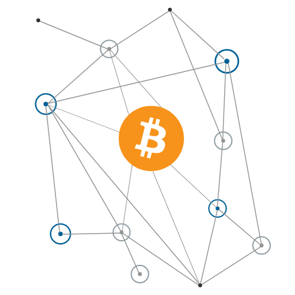
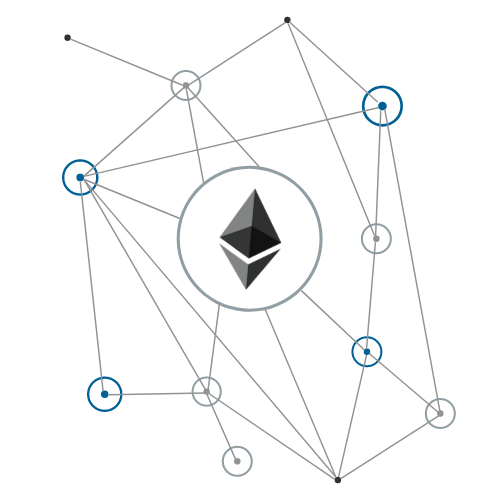
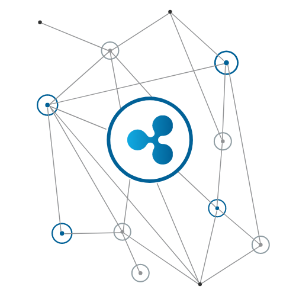

La crypto-monnaie est une monnaie virtuelle qui n'est pas basée sur une banque centrale comme les monnaies habituelles.
Elle peut être utilisée pour tout types transactions.
Le concept de crypto-monnaie débute bien avant la création du bitcoin, le concept naît avec l’entreprise DigiCash Inc fondée par David Chaum en 1989 mais le projet d’adoption massive de la cryptomonnaie échoue.
La première crypto-monnaie publique est le bitcoin inventé en 2009 par Satoshi Nakamoto.
Au fil des années, la monnaie virtuelle se developpe et se dévoile au grand public en 2017 lors de la première bulle des crypto-monnaies menée par le Bitcoin qui frôle les 20 000$.
La plupart des crypto-monnaies ont été conçues dans le but de mieux controller la quantité de monnaie en circulation. A l'inverse des monnaies traditionnelles, la plupart des crypto-monnaies sont limités en volume. Voici une courte vidéo pour récapituler ce qu'est une crypto-monnaie.

Minage
La création de crypto monnaie ou minage de cryptomonnaie est le processus qui consiste à utiliser un ordinateur pour verifier les transactions effectuées par la Blockchain.
Une fois un calcul terminé, on parle dans ce cas d’un bloc valide, le mineur reçoit sa commission en crypto-devise.
Valeur
Le prix de la crypto-monnaie n'est déterminé que par l’offre et la demande. Selon la demande d’une crypto-monnaie, le prix de cette dernière va augmenter. À l’inverse lorsque la demande diminue, le prix aussi.

Bitcoin
Le Bitcoin est une crypto-monnaie qui fut créée en janvier 2009 par Satoshi Nakamoto avec la diffusion de l’implémentation de référence de Bitcoin.
Elle est la plus importante monnaie cryptographique et a comme symbole boursier BTC ou XBT.
Le Bitcoin est une monnaie qui peut être miner, néanmoins sa quantité maximale est limitée à 21 millions.
Avant 2010, le Bitcoin n’avait aucune valeur mais c’est à partir d’avril 2010 que sa valeur a commencé à se négocier.
Contrairement à ce qu'on peut entendre, l’utilisation du Bitcoin comme monnaie du terrorisme ne représentent une faible minorité. En effet, les transactions criminelles sont principallement faites en dollars (80%).
Du point de vue des experts, le Bitcoin représente surtout une valeur refuge du fait de sa croissance tendant vers sa plus haute cote historique, avec un prix unitaire qui a plus de quadruplé entre mars 2020 et novembre 2020 passant de 5 500 dollars à près 40 000 dollars.

Ethereum
L'Ethereum (ou Ether) est une crypto-monnaie créée par le programmeur russo-canadien Vitalik Buterin en juillet 2015.
Elle représente la deuxième plus importante crypto-monnaie avec pour symbôle boursier ETH.
Comme le bitcoin, l'Ether est une monnaie qui se mine. A son inverse, son émission n’est pas limitée.
L'Ether a une valeur et peut être échangé comme toutes les autres monnaies virtuelles.
De nos jours, le prix de l'Ether est en hausse et se montre comme étant une monnaie avec une belle croissance à venir.
Comme les autres crypto-monnaies, l'Ether peut s’acheter sur une plateforme d'échanges à l’aide d’une carte bancaire ou bien par virement.

Ripple
La crypto-monnaie Ripple fut développée par Arthur Britto, David Schwartz et Ryan Fugger en 2012.
Le Ripple est la troisième plus importante crypto-monnaie en volumme sur le marché.
Elle a pour symbole boursier XRP.
Comme le Bitcoin, le Ripple est émis en quantité limitée avec pour maximum 100 milliards d’unités.
Néanmoins, cette monnaie virtuelle n’est pas minable.
Depuis sa création le taux de change du Ripple est très stable (0.30 $ de moyenne). A ce jour le Ripple a atteint son prix unitaire maximal de 1.98$ en décembre 2017.